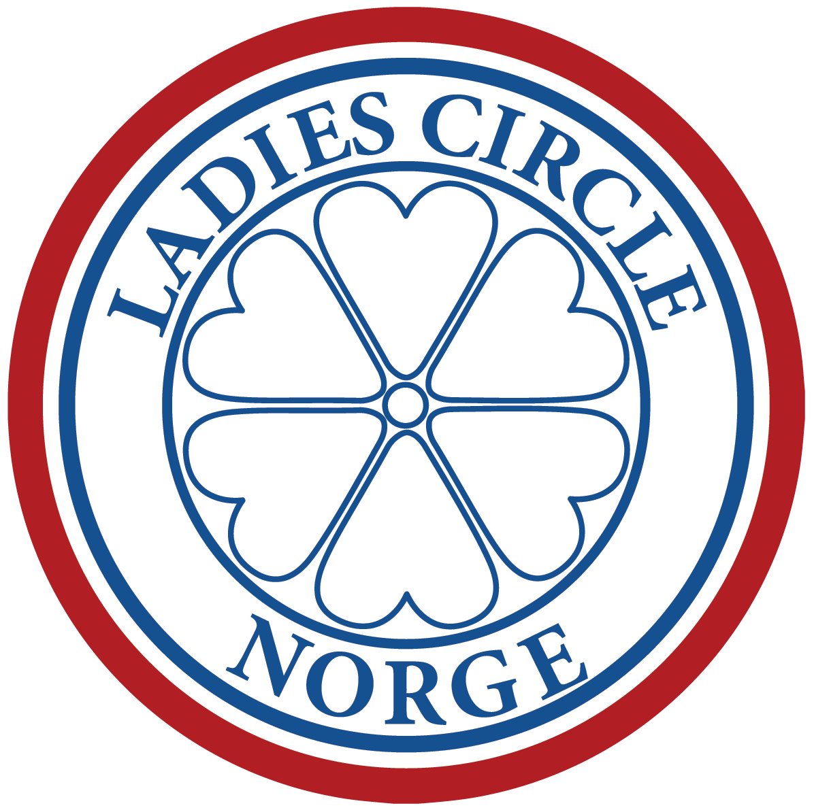

Ladies Circle Holmestrand og LC Kristiansand
De to klubbene arrangerer kvelden sammen. Ladies Circle er en internasjonal organisasjon for kvinner mellom 18 og 45 år, med lokale klubber over hele Norge. Her møtes kvinner med ulik bakgrunn, yrker og erfaringer for å utvikle seg, lære noe nytt og knytte vennskap og kontakter - både lokalt, nasjonalt og internasjonalt. Mottoet er "Friendship and Service" (vennskap og omtanke).
Les om Ladies Circle Norge